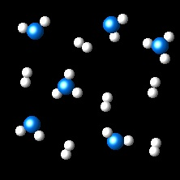

Reacción 5
En la figura se ha dibujado la evolución de un sistema gaseoso a temperatura constante, del estado inicial (izquierda) al estado final (derecha).
 |
 |
 |
Si los átomos A se representan como esferas azules y los átomos B por esferas blancas, ¿cuál es la ecuación química que representa el proceso?
| AB3 ⇄ AB2 + B2 | INCORRECTO. Esta ecuación no es
correcta ya que aumenta el número de átomos de B
|
| 6AB3 ⇄ 4AB2 + 6B2 | INCORRECTO. Esta ecuación no es
correcta ya que aumenta el número de átomos de B.
|
| 4AB3 ⇄ 4AB2 + 2B2 | INCORRECTO. Esta ecuación no es
correcta ya que utiliza un múltiplo de los coeficientes estequiométricos correctos.
|
| 2AB3 ⇄ 2AB2 + B2 | CORRECTO. La ecuación está correctamente
ajustada. Dos moléculas AB3 se transforman en dos de AB2 y una de B2.
|